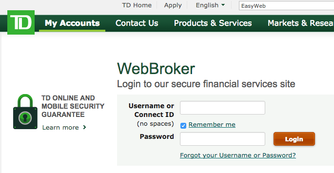
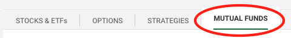
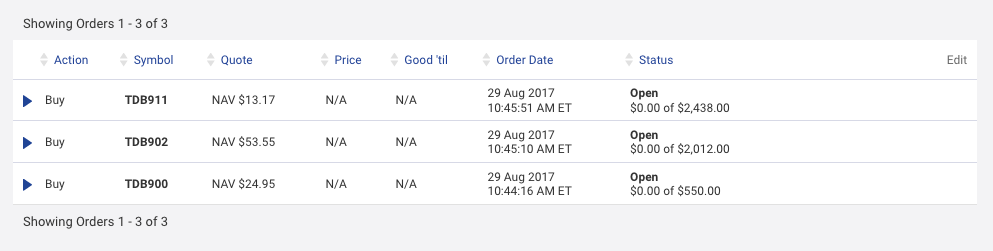

CheckMark Tutoring: How-To Guides for Canadians
CheckMark Tutoring: How-To Guides for Canadians Q: OK, I'm ready to buy TD e-series funds! So how exactly do I do that?
One of the advantages of using TD e-series funds over ETFs is that it is a much easier process to buy and sell. You also do not need to worry about the time of day or day of the week that you buy TD e-series funds unlike ETFs.
Keep in mind that the minimum amount required for initial and subsequent trades for TD e-series funds is $100. So you can't invest less than $100 into any one TD e-series fund directly through WebBroker (TD Direct Investing's online trading platform). However, if you set up a SIP (systematic investment plan) you will be able to invest a minimum of $25 into a TD e-series fund.
It is also important to note that TD e-series index funds have 30 day 'holding periods'. This means that if you sell units of a TD e-series index fund that you purchased within the last 30 days, you will be charged an additional fee (2% early redemption fee). Any units that have been held for longer than 30 days are free to sell.
Q: Should I buy TD e-series funds during market hours (between 9:30 a.m. and 4 p.m) like I do with ETFs? Can I order TD e-series funds in the evening and on weekends?
Unlike ETFs, you do not need to be very concerned about the time of day or day of the week that you buy the TD e-series funds. Just like mutual funds, the TD e-series funds are only bought and sold once per day and are bought at the 'end of day' price. If you order your TD e-series funds before 3 pm, then you will get that day's 'end of day' price. If you order the TD e-series funds after 3 pm, then you will get the 'end of day' price for the next business day. So if you order your TD e-series funds at 3:30 pm on Friday, then you will get the 'end of day' price on Monday since that is the next business day.
Keep in mind that your order may not process right away but when it does go through, it will have the 'end of the day' price for either the day you placed the order (if placed before 3 pm) or the next business day (if placed after 3 pm). So the only advantage of placing the order during market hours is that you would have an idea of which direction the market is going that day. However, this is not something that I would recommend anyone concern themselves with. Feel free to order the TD e-series funds at night or on weekends without worry.
OFFICAL  TUTORING HOW TO: Buying TD e-Series funds
TUTORING HOW TO: Buying TD e-Series funds
- Login to 'WebBroker' with your 'ConnectID' and password.
- If you have followed the steps to open your TD Direct Investing Account (aka TD Waterhouse account) as I recommended, you should now be able to login to WebBroker by clicking on this link.

- Click 'Buy/Sell' and buy the desired 'Mutual Fund'
- Click the 'Buy/Sell' button (pictured to the right) and then click on the 'Mutual Fund' tab. Even though TD e-series funds are index funds, they are still a form of mutual fund (without the high fees) and are listed as 'Mutual Funds' so you have to click the 'Mutual Fund' tab at the top of the page (pictured below)
- Type in the fund 'symbol' that you wish to buy. For example, the TD e-series Canadian index fund is listed as 'TDB900'. Please check this page to determine which funds I recommend that you buy and the allocation of each.
- I recommend that you type in a 'Dollar Amount' instead of the number of 'Units' since TD e-series is able to buy fractional units at no extra charge (so there is really no reason not to do this!).
- For 'Dividend Option' leave it as 'Re-invested' and check off 'Amount including commission'. If you have done everything correctly, your order should look like the one in step 3 (although the dollar amount may be different than the $500 I used).

- Click 'Preview Order', sign the agreement and place your order

- Check your 'Order Status'
- Once you have placed your order, you can check to make sure that you orders have been placed by clicking the 'Order Status' button (pictured to the right) at the top of the WebBroker page
- If you do not see your order listed (like my 3 TD e-series orders in the picture below) then you did not correctly place the order. If your order is listed as 'Open' that means that your order has been placed. It will become 'Filled' (no longer 'Open') depending on when you placed the order as mentioned earlier on this page. *If you order your TD e-series funds before 3 pm, then you will get that day's 'end of day' price and your order should be 'Filled' at the end of the day. If you order the TD e-series funds after 3 pm, then you will get the 'end of day' price for the next business day and your order should be 'Filled' during the next business day.

Comments - Ask questions and/or provide feedback below!
*you can comment as a guest without registering/signing in by clicking on the 'Name' box below and checking the 'I'd rather post as a guest' box. If you don't feel comfortable providing your own email, you can just make one up (e.g. fakeemail@gmail.com).